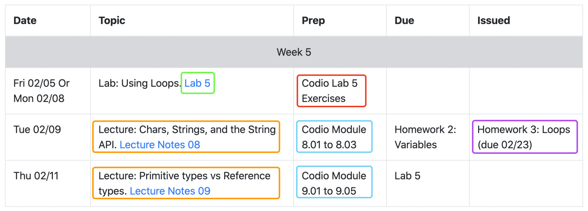
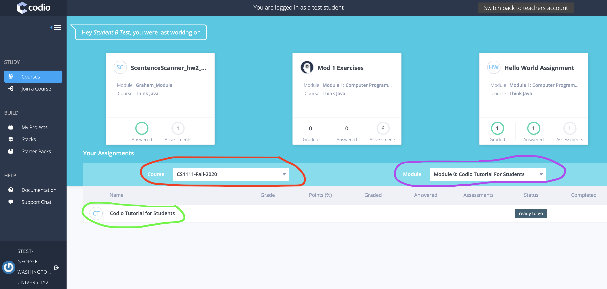

CS 1111
Introduction to Software Development
GWU Computer Science
Introduction to Software Development
GWU Computer Science
If you are properly registered for the course, you should have received this email. if you did not, contact me ASAP (see above). The first email I sent to you all should contain the following information:
For example, the following figure shows an avarage course week with four highlighted activities: 
Some modules must be "Marked As Completed". The following figures will show which ones should be "Marked As Completed".
We will use Piazza as our main communication hub.
Please join Piazza and read the following Piazza Turorial: PiazzaTutorial-cs1111-f20.pdf.
We will use BBUltra to give the online version of the class, and to record it for asynchronous use.
Please open and read this tutorial: tutorialBBUltra.pdf.
We will use Codio as our main coding hub. It will contain class notes, readings, in-class exercises, and most of your homework assignments.
Codio Turorial:
Please log into the Codio course CS1111-Fall-2020 and complete: Module 0: Codio Tutorial For Students.
Using The Student Dashboard
The Student Dashboard looks like this:

Step 1: Make sure you select the correct Course, CS1111-Fall-2020 (in Red).
Step 2: Make sure you select the correct Module, Module 0: Codio Tutorial for Students (in Purple).
Step 3: Make sure you select the correct Assignment, Codio Tutorial for Students (in Green).
Step 4: Press the "ready to go" button on the right of the assignment.
Please complete the following survey before the first lecture: Intro-Survey